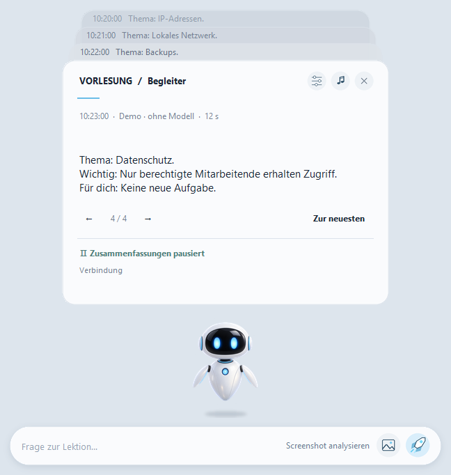
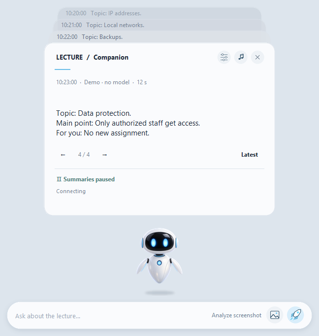
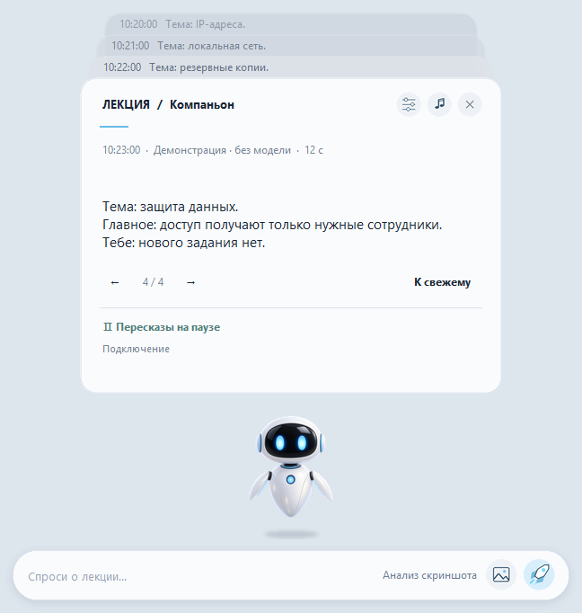

Deutsch
Handbuch
Lokaler Vorlesungsbegleiter für Microsoft Teams. Schritt-für-Schritt-Anleitung für Download, Start und Verwendung.
Teams · локальная обработка
Помощник для IT-лекций в Microsoft Teams. Кратко разбирает новые субтитры и по запросу объясняет текущий слайд. Обработка выполняется на вашем компьютере.
Выберите язык интерфейса. Скриншоты показывают демонстрационные примеры без реальных встреч и участников.

Lokaler Vorlesungsbegleiter für Microsoft Teams. Schritt-für-Schritt-Anleitung für Download, Start und Verwendung.

A local assistant for Microsoft Teams lectures. Read the steps for downloading, starting, and using the app.

Локальный помощник для лекций в Microsoft Teams. Пошаговый порядок скачивания, первого запуска и работы.